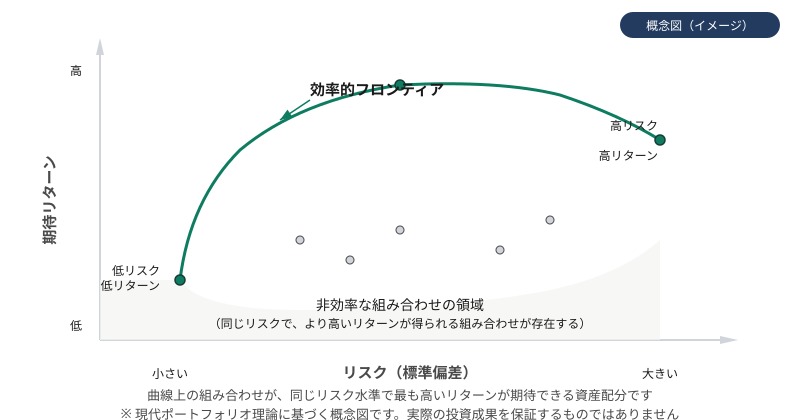

上級編
このページで学ぶこと
- 現代ポートフォリオ理論（MPT）の概要
- 効率的フロンティア
- シャープレシオの概念
- 投資に関わるマクロ経済指標
- 暴落時の心理と行動バイアス
現代ポートフォリオ理論（MPT）
現代ポートフォリオ理論（Modern Portfolio Theory）は、1952年にハリー・マーコウィッツによって提唱された理論です。この理論の核心は、「個々の資産のリスクとリターンだけでなく、資産間の相関関係を考慮することで、同じリターンでもリスクを低減できるポートフォリオを構築できる」という考え方です。
相関係数
相関係数は、2つの資産の値動きの関連性を-1から+1の範囲で示す指標です。
- 相関係数 +1: 2つの資産が完全に同じ方向に動く
- 相関係数 0: 2つの資産の値動きに関連性がない
- 相関係数 -1: 2つの資産が完全に逆方向に動く
相関係数が低い（できれば負の）資産を組み合わせることで、ポートフォリオ全体のリスクを効果的に低減できます。
MPTの限界
MPTは過去のデータに基づいて相関係数やリスク・リターンを推定しますが、金融危機時には通常と異なる相関が現れることがあります（相関の収束）。また、リターンの分布が正規分布に従うという仮定は、実際の市場では成り立たないことがあります（ファットテール）。
効率的フロンティア
効率的フロンティアとは、与えられたリスク水準で最大のリターンが期待できる（あるいは同じリターンで最小のリスクとなる）ポートフォリオの組み合わせを結んだ曲線です。
この曲線上のポートフォリオは「効率的」であり、曲線の下にあるポートフォリオは、同じリスクでより高いリターンを得られる組み合わせが存在することを意味します。
投資家は自分のリスク許容度に応じて、効率的フロンティア上の一点を選ぶことが理論上の最適解となります。
図：効率的フロンティア

曲線上の組み合わせが最も効率的な資産配分とされています（現代ポートフォリオ理論に基づく概念図です）
シャープレシオ
シャープレシオは、リスク（標準偏差）1単位あたりの超過リターン（リスクフリーレートを超える分のリターン）を示す指標です。1966年にウィリアム・シャープによって考案されました。
シャープレシオ = （ポートフォリオのリターン − リスクフリーレート） ÷ ポートフォリオのリスク（標準偏差）
シャープレシオが高いほど、取ったリスクに対して効率的にリターンを得ていることを意味します。ファンドの運用効率を比較する際に用いられることがあります。
シャープレシオの注意点
シャープレシオは過去のデータに基づく指標であり、将来のパフォーマンスを保証するものではありません。また、リターンの分布が正規分布から大きく外れる場合（テールリスクが大きい場合）には、シャープレシオだけでは運用の質を十分に評価できません。
投資に関わるマクロ経済指標
マクロ経済の動向は市場全体に影響を与えます。以下は投資家が注目する主な経済指標です。
| 指標 | 内容 | 市場への影響（一般的な傾向） |
|---|---|---|
| GDP（国内総生産） | 一国の経済活動の総量を示す | 成長鈍化は株式市場にとってネガティブ材料になりやすい |
| CPI（消費者物価指数） | インフレ率を測る代表的な指標 | 高インフレは金利上昇を招き、株価の下押し要因になりやすい |
| 政策金利 | 中央銀行が設定する基準金利 | 利上げは株式にマイナス、債券価格にも下落圧力 |
| 雇用統計 | 雇用者数や失業率の変化 | 雇用の悪化は景気後退のシグナルとなりうる |
| PMI（購買担当者景気指数） | 企業の景況感を示す先行指標 | 50を下回ると景気縮小を示唆する |
指標の解釈には注意が必要
経済指標と市場の反応は必ずしも単純な関係ではありません。「予想との差」が重要で、良い指標でも市場予想を下回れば売り材料になることがあります。また、ひとつの指標だけで投資判断をすることは危険です。
暴落時の心理と行動バイアス
市場の暴落時には、投資家の心理的バイアスが最も顕著に表れます。これらを理解しておくことは、冷静な判断を保つ助けになります。
主な行動バイアス
- 損失回避バイアス: 同じ金額の利益と損失では、損失の方が約2倍の心理的インパクトがある。暴落時に過剰に反応して売却してしまう原因になる
- 群集心理（ハーディング）: 周囲の行動に追従しやすい傾向。「みんなが売っているから自分も売らなければ」という行動につながる
- 現在バイアス: 目の前の損失に過度に注目し、長期的な視点を失いやすい
- 確証バイアス: 自分の判断を支持する情報ばかり集めてしまう傾向。暴落時にはネガティブな情報ばかりに注目しがち
- アンカリング: 過去の高値を基準に「こんなに下がった」と判断してしまう。暴落前の価格に戻ることを根拠なく期待する原因にもなる
暴落時に意識すべきこと
- 事前に決めた投資方針を持ち、感情的な判断を避ける
- 暴落は過去にも繰り返し起きており、市場は長期的には回復してきた歴史がある（ただし、個別銘柄が回復する保証はない）
- 生活防衛資金が確保されていれば、投資資金を今すぐ使う必要はない
- ニュースやSNSを過度にチェックすることは不安を増幅させやすい
- 暴落時にパニック売りをすると、その後の回復局面に参加できない
過去の回復は将来を保証しない
「市場は過去に回復してきた」という事実は重要な参考情報ですが、将来も同様に回復する保証はありません。また、市場全体が回復しても、個別銘柄が回復しないケースは多くあります。
よくある誤解
シャープレシオは過去のデータに基づく指標であり、将来のパフォーマンスを保証するものではありません。また、計測期間やリスクフリーレートの設定によっても値が変わります。単一の指標だけでファンドの優劣を判断すべきではありません。
暴落後にさらに下落する可能性もあり、「底」を正確に予測することはできません。積立投資を継続している場合、暴落時に安く購入できるメリットはありますが、一括で追加投資するタイミングを見計らうことには大きなリスクが伴います。
金融危機のような市場全体の暴落では、通常は相関が低い資産クラス同士でも同時に下落することがあります（相関の収束）。分散投資はリスク軽減に有効ですが、システマティックリスクを完全に排除することはできません。
理解度チェック
Q1. 現代ポートフォリオ理論（MPT）の核心的な考え方はどれですか?
Q2. 損失回避バイアスについて正しいものはどれですか?
Q3. シャープレシオが示すものはどれですか?